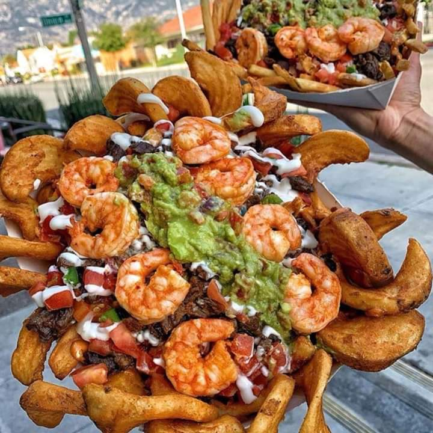
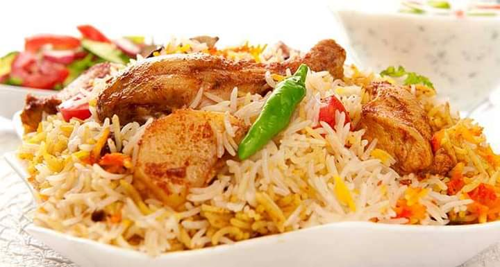
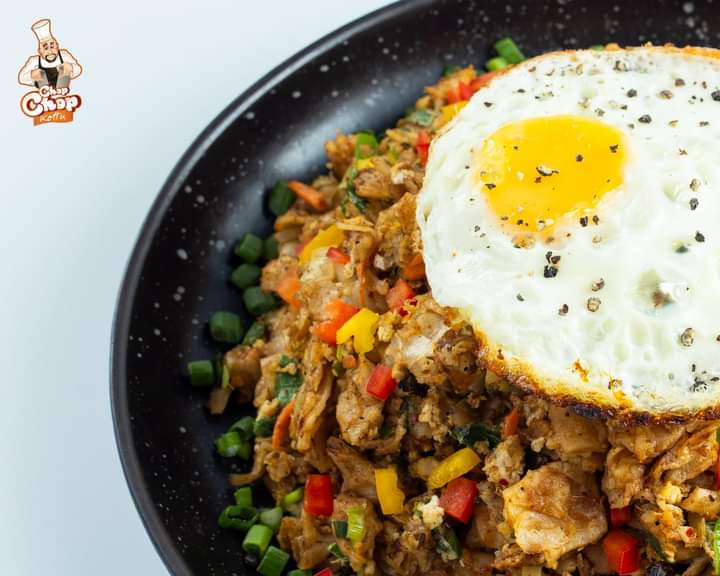
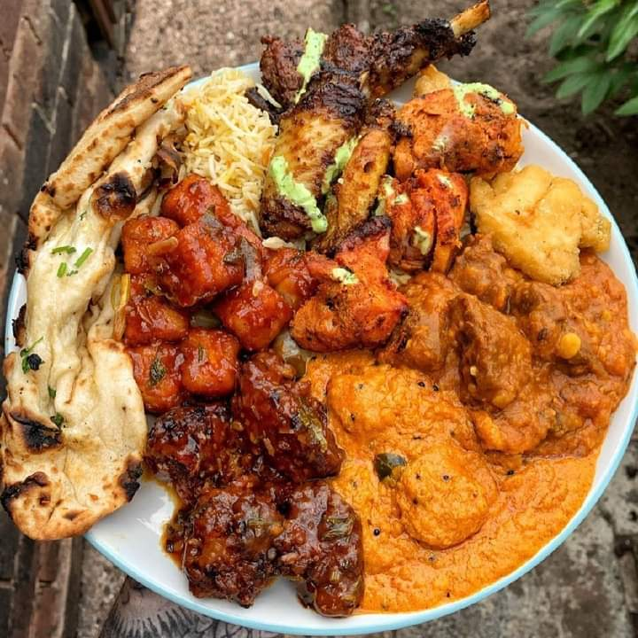

KFC landed in Sri Lanka in 1995, when the first restaurant opened its doors at Majestic City. Since then, this most loved and fastest growing retail chain in the world has expanded to over 30 restaurants around the country and serves up nearly 11.5 million meals annually.
What made KFC great then is what makes the chain still famous and favored. The secret lies in a world-famous-recipe, Colonel Harland Sanders signature blend of 11 herbs and spices, which even today is under lock and key at our headquarters in Kentucky, USA.
We are passionate about serving our customers freshly prepared, great tasting food with a key part of this being localizing the dishes to suit the Sri Lankan palate; this includes the Chicken Buriyani, KFC Spice Rice, and KFC Chicken Charger - along with the signature KFC meals.



